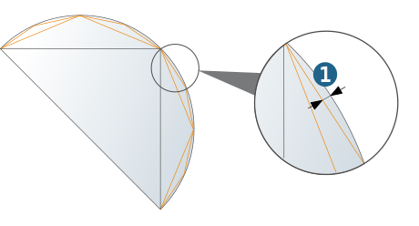
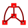

Part data
 | Stock model: Definition of a stock model that is available for multiple jobs in a job list. |
 | Model: Definition of a milling area that is available for multiple jobs in a job list. The definitions are applicable for visualising the model data in hyperVIEW. |
Material: The Defined option is activated by default when you create a new job list. In the list, select the material you require for machining purposes. If you import a tool from the OPEN MIND tool database into the job definition, and the material defined in the job list is also assigned to this tool, set the Model option in the cutting profile under Usage in order to use the technology parameters associated with this tool. | |
Fixtures: Defined: Enable to assign a fixture area to a job list or to define a new fixture area. |
Tolerance: Max. permissible distance (1) between the faceted surface of the polyhedron model and the real model surface.
|  |
Only available if a job list is created for turning jobs, see Turning dialog page.
Click the icon to define a new clamping area. | |
(A) Body length: Define the main spindle chuck housing. Select two points for this purpose. Select Pick fixture body clamping position (1) as the first point. Select Pick fixture body front (2) as the second point. | |
(B) Jaw length: Define the main spindle jaw. Select two points for this purpose. Select Pick fixture jaw front (3) as the first point. Select Pick fixture body front (2) as the second point. | |
 | (C) Body length: Define the counter spindle chuck housing. Select two points for this purpose. Select Pick fixture body clamping position (4) as the first point. Select Pick fixture body front (5) as the second point. |
(D) Jaw length: Define the counter spindle jaw. Select two points for this purpose. Select Pick fixture body front (5) as the first point. Select Pick fixture jaw front (6) as the second point. |
Define the length (1) and orientation of the part (A). Select two points for this purpose. Select a point on the front of the part (2) as the first point (Pick parts front point). Select a point on the back of the part (3) as the second point (Pick parts back point). |
(A) Part, (B) Main spindle clamping jaws, (C) Main spindle housing
Fixture feedback
For turning jobs with or without main and counter spindle, a 2D feedback (1) is automatically generated if a 3D model is defined as the fixture. The Tool safe distance is also displayed as graphical feedback (2). (3) Stock feedback, (4) Material to be removed.
Mirror
Define a mirror for all jobs/compound jobs in the job list. To do this, select the respective checkbox in the Active line and under Selection choose the mirror you require.
 | Click the icon to define a new mirror. |
Job list comments are transferred to a new, mirrored job list when a mirror is created.